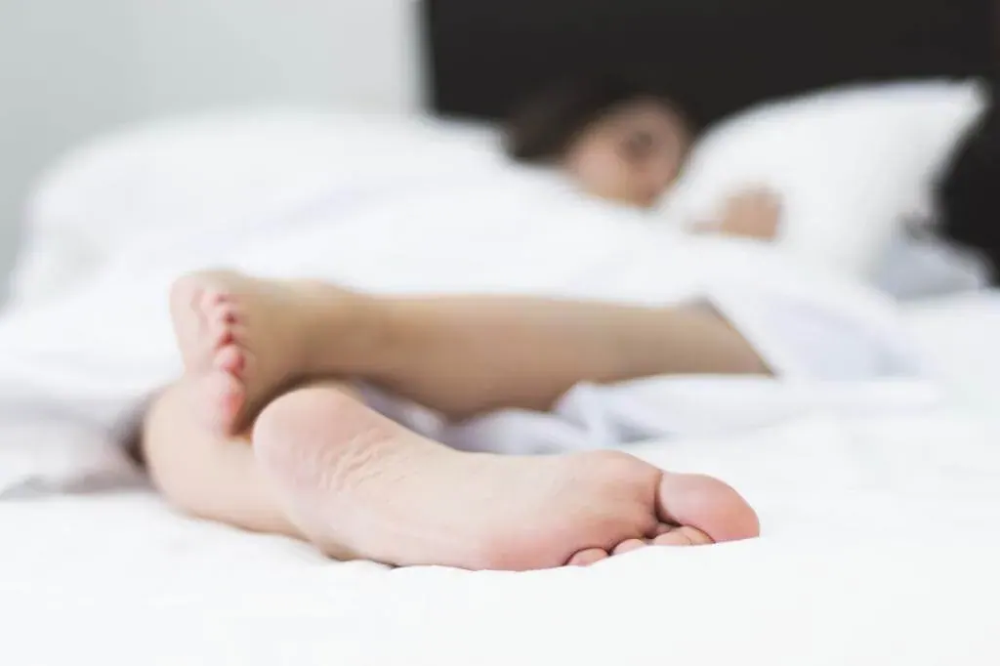

¿Te gusta dormir con un pie destapado? Esta es la razón

La ciencia tiene la respuesta de porque sacamos un pie fuera del edredón mientras dormimos
Para saber por qué, primero debes comprender la relación entre la temperatura corporal y el sueño. Durante el día, el “termostato” del cuerpo humano se mantiene a una temperatura promedia de 36 – 36,5 grados. Pero por la noche, nuestra temperatura corporal desciende vertiginosamente, hasta 1.2 grados en el transcurso de una noche de sueño.
Esta disminución progresiva de la temperatura corporal forma parte del proceso de quedarse dormido, además cuanto más rápido descienda la temperatura, antes vendrá Morfeo a por nosotros.
Nuestro cuerpo se enfría durante el sueño
Una de las formas en que el cuerpo regula la temperatura, es a través de los vasos sanguíneos. Si el cerebro decide que el cuerpo está demasiado caliente, se produce una vasodilatación, y se redistribuye la sangre más caliente para enfriarlo. Sin embargo, cuando el cuerpo está demasiado frío, el cerebro ordena lo opuesto, restringiendo el flujo de sangre hacia las extremidades del cuerpo.
Ahora sí, podemos ir hablando de pies. Las plantas de los pies (y las palmas de las manos) son los intercambiadores de calor más eficientes del cuerpo, ya que carecen de vello y no están tan aislados como otras zonas de la superficie de la piel. Se ha demostrado que calentar los pies antes de irse a dormir con un baño de agua tibia o con calcetines promueve la vasodilatación, que a su vez disminuye la temperatura central del cuerpo más rápido.
Resulta que la diferencia de temperatura entre la superficie de la piel de nuestras extremidades y el abdomen, es el indicador más fuerte de la probabilidad de quedarnos dormidos más rápido.
Buenas noticias, defensores de los calcetines para dormir
Los científicos plantean la hipótesis de que los pies con calcetines también tienen un efecto neurológico. El “termostato” del cerebro se encuentra en una región llamada hipotálamo anterior. En esta zona hay un tipo de neurona llamada “neurona sensible al calor” que aumenta su velocidad de activación cuando hay una diferencia de temperatura entre el centro del cuerpo y las extremidades, como los pies.
Investigaciones han demostrado que las tasas de activación de la neurona sensible al calor aumentan durante la fase de sueño lento y disminuyen gradualmente antes de despertarnos. Por lo tanto, estas células pueden desempeñar algún papel en la generación de la sensación de somnolencia que nos ayuda a quedarnos dormidos y, además continuar estándolo durante toda la noche. Y si ese es el caso, calentar los pies antes de acostarse le da un impulso adicional a esta neurona.
Hemos hablado de dormir con un pie fuera de la cama y de calcetines para dormir, ¿y el nórdico?
Si eres de los que saca un pie del nórdico para dormir, que sea por la puerta grande. Elige ahora del nuevo edredón nórdico de Lo Monaco reversible, estrena edredón como estrenas sueños cada noche. No conocerás lo realmente suave y mullido al dormir, hasta que no lo hayas probado. Es tan confortable gracias a su relleno de fibras “tacto pluma” ¿Estás seguro que no quieres disfrutar de él con el cuerpo entero?